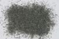

|
|
(For further information on spectroscopy, see:
http://speclab.cr.usgs.gov)
TITLE: Cummingtonite HS294 DESCRIPT
DOCUMENTATION_FORMAT: MINERAL
SAMPLE_ID: HS294
MINERAL_TYPE: Inosilicate
MINERAL: Cummingtonite (Amphibole group)
FORMULA: (Mg,Fe+2)7Si8O22(OH)2
FORMULA_HTML: (Mg,Fe+2)7Si8O22(OH)2
COLLECTION_LOCALITY: Lead, SD
ORIGINAL_DONOR: Hunt and Salisbury Collection
CURRENT_SAMPLE_LOCATION: USGS Denver Spectroscopy Laboratory
ULTIMATE_SAMPLE_LOCATION: USGS Denver Spectroscopy Laboratory
SAMPLE_DESCRIPTION:
Forms series with Magnesiocummingtonite and Grunerite.
"I-13 Cummingtonite 294B--Lead, S. Dakota. (Mg, Fe2+)5(Si8O22)(OH)2: This amphibole has the same composition as anthophyllite, but is monoclinic rather than orthorhombic in crystal form. Its spectrum is a relatively smooth curve in which there is no evidence of hydroxyl bands, but in which the main feature is a broad ferrous iron band near 1.0µ. The lack of hydroxyl bands in what appears to be a rather pure amphibole in hand specimen is something that we cannot explain. Reflectivities I through IV are 40%, 24%, 12%, and 8% at 0.75µ, and 32%, 15%, 6%, and 4% at 1.0µ. The sample is a dark greenish gray. The low reflectivities are a function of this sample darkness, not of contamination with opaques."
Hunt, G.R., J.W. Salisbury, and C.J. Lenhoff, 1973, Visible and near-infrared spectra of minerals and rocks: VI. Additional silicates. Modern Geology, v. 4, p. 85-106.
IMAGE_OF_SAMPLE:

END_SAMPLE_DESCRIPTION.
XRD_ANALYSIS:
Cummingtonite + quartz + biotite + chlorite + others (Norma Vergo)
END_XRD_ANALYSIS.
COMPOSITIONAL_ANALYSIS_TYPE: None # XRF, EM(WDS), ICP(Trace), WChem
COMPOSITION_TRACE: None
COMPOSITION_DISCUSSION:
END_COMPOSITION_DISCUSSION.
MICROSCOPIC_EXAMINATION:
Sample has two different amphiboles, one green and the other clear in about equal proportions. Sample also contains significant quartz and trace garnet? G. Swayze.
END_MICROSCOPIC_EXAMINATION.
SPECTROSCOPIC_DISCUSSION:
END_SPECTROSCOPIC_DISCUSSION.
SPECTRAL_PURITY: 1c2c3c4c # 1= 0.2-3, 2= 1.5-6, 3= 6-25, 4= 20-150 microns
| LIB_SPECTRA_HED: | where | Wave Range | Av_Rs_Pwr | Comment |
|---|---|---|---|---|
| LIB_SPECTRA: | splib04a r 1313 | 0.2-3.0µm | 200 | g.s.= |
| LIB_SPECTRA: | splib05a r 2284 | 0.2-3.0µm | 200 | g.s.= |
| LIB_SPECTRA: | splib06a r 6583 | g.s.= | ||
| LIB_SPECTRA: | splib06a r 6595 | g.s.= |
{kind=link}